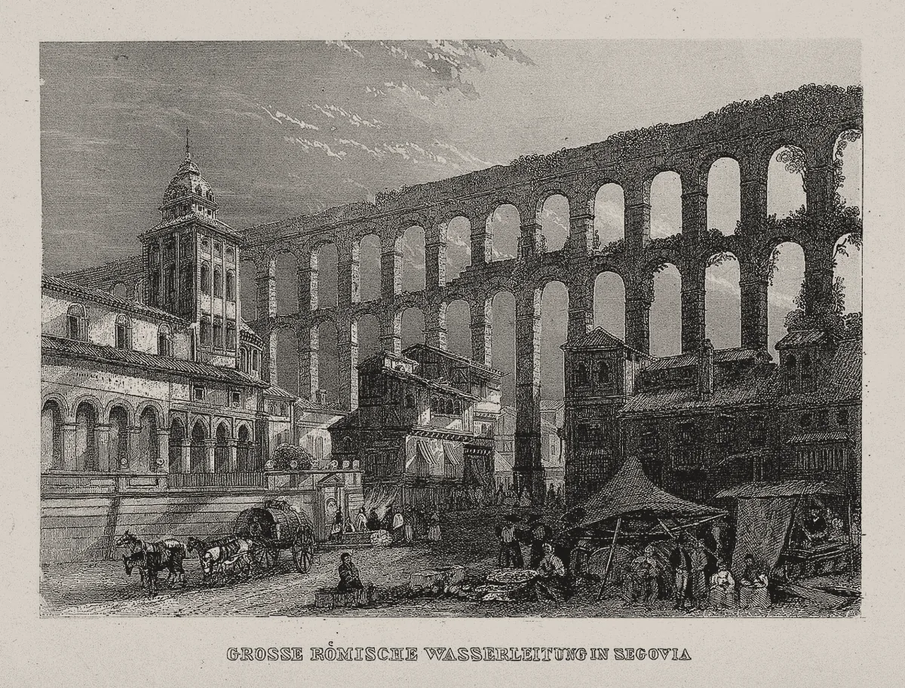

· Edición 33 · 5 min de lectura
El agua de Cartagena depende de dos tuberías: por qué se repiten los cortes y qué puede cambiarlo

Grabado anónimo · CC BY 4.0, Wellcome Collection, vía Wikimedia Commons
El agua de Cartagena depende de dos tuberías: por qué se repiten los cortes y qué puede cambiarlo
Ver todo el tema, de principio a fin →
En pocas palabras. En Cartagena, un daño en una tubería puede dejar sin agua a cuatro o seis de cada diez usuarios, y ha pasado al menos cuatro veces desde 2024. El Concejo discute crear una empresa pública que reemplace a la mixta. La evidencia sugiere que el agua vuelve más por las reglas que por el dueño: tuberías de respaldo, menos pérdidas y metas a la vista, como lo lograron Phnom Penh y la propia Cartagena en los noventa.
El dato curioso. En el año 97, el emperador Nerva nombró a Sexto Julio Frontino encargado de los acueductos de Roma. En su informe al emperador contó algo incómodo: los propios fontaneros del Estado perforaban las tuberías principales y le vendían el agua a negocios por tubos escondidos bajo el pavimento. Al cabecilla lo apodaban a punctis, algo así como «secretario de perforaciones», en burla de los títulos oficiales. Diecinueve siglos después, las fugas y las conexiones ilegales siguen en el informe de cualquier acueducto.
Qué pasó. Una ciudad que depende de dos tubos es como una casa con una sola llave de paso: si falla, se seca todo.
- Octubre. El 1 de octubre, Aguas de Cartagena (Acuacar), la empresa que presta el servicio, halló una fuga en una tubería que lleva cerca de la mitad del agua cruda. Para repararla cortó el servicio al 40% de los usuarios.
- Antes. En septiembre y noviembre de 2024, dos daños dejaron sin agua al 60% de la ciudad; en agosto de 2025, otro, al 40%. Desde mayo de 2026 hubo cortes por turnos, por microalgas en el agua, hasta que un tribunal ordenó suspenderlos.
- La pelea. El 6 de octubre, el alcalde Dumek Turbay volvió a radicar su proyecto de empresa pública; la primera versión se retiró por fallas de trámite. El 13, el Tribunal Administrativo de Bolívar admitió la demanda del Distrito para terminar el contrato con Acuacar.
Fuente: Aguas de Cartagena, citada por El Universal, El Espectador y RTVC
Ver datos
| % | |
|---|---|
| Sep. 2024 | 60 |
| Nov. 2024 | 60 |
| Ago. 2025 | 40 |
| Oct. 2026 | 40 |
Cómo llegamos aquí.
- Dos tubos para casi todo. El agua cruda va de la estación de Albornoz a la planta El Bosque por dos tuberías que, según el gerente de Acuacar, atienden el 85% de la demanda.
- Un respaldo que no llega. En 2024, Acuacar anunció puentes entre las dos para octubre; con ellos, decía, un daño afectaría al 20% o 25% de los usuarios. La rotura de 2025 llegó al 40%. Ahora construye una tercera conexión, sin fecha confirmada.
- Agua que se pierde. En 2025, el gerente dijo que se perdía cerca del 42% del agua producida.
- Un socio en pleito. El Distrito tiene la mitad de Acuacar y Veolia, que la opera, el 45,9%. Con el contrato en un tribunal, cada obra es también un argumento.
Ya pasó antes. En 1995, Cartagena se asoció con Aguas de Barcelona y nació Acuacar, el primer contrato con privados en el agua de Colombia. Entonces, unas 74 de cada 100 personas tenían acueducto; en 2010, el Banco Mundial reportaba cobertura universal, incluidos los barrios más pobres. Un estudio de 2001 advertía, sin embargo, que el Distrito tenía poca capacidad para negociar con su socio.
El patrón. Cambiar de operador puede ser una inflexión, pero el efecto dura lo que duren las metas y quien las vigila.
¿Hay salida? Sí, y no depende solo del dueño.
- Phnom Penh, con una empresa pública. En 1993, la empresa de agua de la capital de Camboya perdía 72 de cada 100 litros, en parte por conexiones ilegales instaladas por sus propios empleados, como en la Roma de Frontino. El agua llegaba unas diez horas al día. Con un director nuevo, autonomía, tarifas que subieron por etapas y persecución a las conexiones ilegales, en 2008 perdía cerca de 6 de cada 100 y daba agua todo el día, según un estudio de caso de Asit Biswas y Cecilia Tortajada y el Banco Mundial.
- Respaldo en la red. Puentes entre tuberías, para que un daño seque un sector y no media ciudad. Falta que funcionen y que se publique cuánto protegen.
Pero ojo.
- El dueño no es una varita. En 2010, Germà Bel, Xavier Fageda y Mildred Warner reunieron los estudios sobre agua y basuras: la operación privada no salía más barata de forma sistemática; pesaban más el servicio y la regulación.
- Ni los campeones se libran. Phnom Penh volvió a perder 25,5% de su agua en 2025, según su informe anual.
Lo que ya habíamos contado. El 30 de septiembre escribimos sobre Air-e, la empresa que lleva la luz a Atlántico, Magdalena y La Guajira: el Gobierno la tomó en 2024 para arreglarla y, dos años después, debía cinco veces más (ver esa edición). Cambiar de administrador, solo, no bastó.
Qué hacer con esto
Para ir pensando. En Cartagena, un tanque de reserva tapado se parece más a un seguro que a un lujo.
Cómo prepararse. Anotar los días sin servicio y guardar la factura: si la falla dura 15 días o más en un periodo de facturación, la Ley 142 dice que solo se cobra el consumo, y la falla da derecho a indemnización.
Ojo con el cuento. «Con la empresa pública se acaban los cortes» y «sin el socio privado viene el caos» son la misma promesa al revés: un tubo se rompe con cualquier dueño. Si un anuncio no trae fecha de obra ni cifra de protección, es un anuncio.
Qué podríamos exigir. Una cifra pública: qué parte de la ciudad se queda sin agua si se rompe cada tubería principal, y cuándo bajará a una cuarta parte, como se prometió en 2024.
Para quien quiera másDos lecturas
Una empresa pública propia. El modelo de 1995 cumplió su meta de cobertura, pero la ciudad creció, los daños se repiten y el Distrito no logra que las obras lleguen a tiempo. Una empresa propia dejaría las decisiones en quien responde ante los votantes.
Arreglar el contrato. Romper un contrato vigente abre años de pleitos, y una empresa nueva arranca sin experiencia: su capital, 10.000 millones de pesos, sería el 2,2% de lo que el sistema necesita, según Veolia. Lo urgente serían las obras y unas metas exigibles.
Quién decide y cuándo
Quién decide. El Concejo vota la empresa pública; el Tribunal Administrativo de Bolívar, la demanda contra el contrato; la junta de Acuacar, con el Distrito y Veolia, las obras.
Cuándo. El Concejo sesiona hasta el 30 de noviembre, sin fecha de votación. El tribunal no tiene plazo conocido.
Cómo participar. Ante una falla, la Ley 142 permite reclamar a la empresa y, si no responde bien, acudir a la Superintendencia de Servicios Públicos.
Seguimiento de la decisión
Pendiente · plazo:
Concejo Distrital de Cartagena: Votar el proyecto del alcalde que autoriza crear la Empresa Oficial de Servicios Públicos de Cartagena, cien por ciento del Distrito, para asumir el acueducto y el alcantarillado que hoy presta Aguas de Cartagena.
La primera versión se radicó el 1 de junio y se retiró el 5 de octubre por fallas en el trámite; el alcalde la volvió a radicar el 6 de octubre. El 30 de noviembre termina el último periodo de sesiones ordinarias del año; no es una fecha fijada para votar.
Pendiente · sin fecha fija
Aguas de Cartagena (Acuacar), con su junta directiva, en la que están el Distrito y Veolia: Poner en servicio las conexiones entre las dos tuberías de agua cruda que van de Albornoz a la planta El Bosque, para que un daño en una de ellas no deje sin agua a más de una cuarta parte de la ciudad.
Prometido desde · 1 plazo incumplido
En septiembre de 2024, Acuacar anunció que terminaría las primeras conexiones en octubre de ese año; con ellas, un daño afectaría al 20% o al 25% de los usuarios. En agosto de 2025, una rotura en Henequén, en esa misma línea, dejó sin agua al 40%. La empresa dice que construye una tercera conexión; no encontramos fecha de entrada en servicio.
Para quien quiera másLa paradoja del día
Este año, un tribunal le ordenó a Acuacar suspender el racionamiento, y la Superintendencia de Servicios Públicos le dio 94,39 puntos sobre 100 por su gestión de 2025: riesgo bajo. La empresa aprobó el examen; el grifo sigue en recuperación.
Para conversar
La pregunta. ¿Qué le importa más a una ciudad: quién es dueño de su acueducto o qué tan rápido vuelve el agua cuando un tubo se rompe? ¿Y qué podríamos hacer para que esa cifra se publique y se cumpla?
Para leer más
Water 4.0: The Past, Present, and Future of the World's Most Vital Resource, de David Sedlak (Yale University Press, 2014; en inglés). Un ingeniero de la Universidad de California en Berkeley cuenta cómo las ciudades aprendieron a traer, limpiar y cuidar el agua, desde los acueductos de Roma, y por qué esas redes envejecen y hay que volver a pensarlas.
¿Le interesa ver las fuentes?
31 fuentes: 5 académicas, 2 oficiales, 1 de datos, 5 de organizaciones, 15 de prensa, 3 de referencia.
- Organización Aguas de Cartagena (Acuacar). #2887 - Culminan los trabajos previstos en la parada técnica y se identifica una fuga que requiere suspender el servicio al 40% de los usuarios
- Prensa El Universal (Cartagena). Acuacar detecta fuga tras parada técnica: los barrios de Cartagena que estarán sin agua
- Prensa El Universal (Cartagena). 60% de Cartagena sin agua tras rotura de tubo: estos son los barrios afectados
- Prensa El Espectador (blog El Río). El 60% de Cartagena se quedó sin agua
- Prensa RTVC Noticias. Avería en tubería de Henequén dejó sin agua al 40 % de Cartagena
- Prensa El Universal (Cartagena). Daños en la red de acueducto: ¿qué está haciendo Aguas de Cartagena?
- Prensa El Universal (Cartagena). «Al mes estamos teniendo 100 daños en red»: Aguas de Cartagena
- Prensa El Universal (Cartagena). Aguas de Cartagena programó nuevas obras en el acueducto: ¿cuándo?
- Prensa Diario La Libertad. Acuacar alcanza un 85% de avance en la instalación de una nueva tubería en Nuevo Bosque
- Prensa La República. Alcaldía de Cartagena rompió relaciones con Veolia, socio operador de Acuacar
- Prensa Blu Radio. Tribunal de Bolívar ordena a Aguas de Cartagena suspender racionamientos de agua
- Oficial Alcaldía de Cartagena. Alcalde Dumek Turbay rompe con Aguas de Cartagena y Veolia: anuncia acciones legales y propone una empresa pública para manejar el agua en la ciudad
- Prensa El Heraldo. Alcalde de Cartagena vuelve a presentar proyecto para crear nueva empresa de servicios públicos
- Prensa El Universal (Cartagena). Tribunal admite demanda de la Alcaldía de Cartagena que busca terminar contrato con Acuacar
- Prensa Revista Metro. Al menos 10 proyectos de acuerdo estudiará el Concejo de Cartagena en su último periodo de sesiones ordinarias del 2026
- Prensa El Universal (Cartagena). Veolia responde al Distrito y alerta sobre riesgos para el servicio de agua en Cartagena
- Prensa El Universal (Cartagena). Acuacar logra reconocimiento nacional de Superservicios, pero persisten quejas en Cartagena: así lo resolverá
- Académica Universidad Tecnológica de Bolívar y otros, vía ResearchGate. Cartagena's Water Distribution System
- Organización Banco Mundial. Implementation Completion and Results Report: Cartagena Water Supply, Sewerage and Environmental Management Project (Report No. ICR00001053)
- Organización Banco Mundial, Grupo de Evaluación Independiente (2016). Public and Private Paths to Sustainable Water Supply and Sanitation in Colombia (1999-2011)
- Académica GHK International y Universidad de Birmingham (Nickson, 2001), vía IRC. Establishing and Implementing a Joint Venture: Water and Sanitation Services in Cartagena, Colombia
- Académica International Journal of Water Resources Development (Biswas y Tortajada, 2010), vía Third World Centre. Water Supply of Phnom Penh: An Example of Good Governance
- Organización Banco Mundial (centro de recursos de asociaciones público-privadas). Cambodia: Phnom Penh Water Supply Authority
- Organización Development Asia (Banco Asiático de Desarrollo). How Phnom Penh Improved Water Services through Pricing Reforms
- Datos Phnom Penh Water Supply Authority. Annual Report 2025
- Académica Journal of Policy Analysis and Management (Bel, Fageda y Warner, 2010), repositorio de la Universidad de Barcelona. Is private production of public services cheaper than public production? A meta-regression analysis of solid waste and water services
- Oficial Función Pública (Gestor Normativo). Ley 142 de 1994, régimen de los servicios públicos domiciliarios (artículos 136 y 137: falla en la prestación del servicio)
- Académica Journal of Ancient History (Taylor, 2024). Novae erogationis ordinatio: Frontinus, Domitian, Nerva, and the Aqua Traiana
- Referencia Lapham's Quarterly. Sextus Julius Frontinus
- Referencia LacusCurtius (Universidad de Chicago). Frontinus, De aquaeductu urbis Romae, traducción de C. E. Bennett (Loeb, 1925)
- Referencia Biblioteca pública de Arlington Heights (catálogo). Water 4.0: the past, present, and future of the world's most vital resource
Glosario
- Agua cruda: el agua tal como se toma de la fuente, antes de que la planta la potabilice.
- Empresa mixta: empresa con dueños públicos y privados; en Acuacar, el Distrito y Veolia, más algunos socios menores.
- Interconexión: tubería que une dos líneas para que, si una se daña, la otra lleve el agua.
- Pérdidas (agua no contabilizada): el agua que se produce y no se cobra: fugas, conexiones ilegales y medidores que fallan.
- Acción popular: demanda que cualquier persona puede presentar ante un juez para proteger derechos colectivos, como el acceso al agua.
- Proyecto de acuerdo: propuesta que vota el concejo de un municipio o distrito; es la «ley» de la ciudad.
- Superintendencia de Servicios Públicos: entidad nacional que vigila a las empresas de agua, luz, gas y aseo.
Nota metodológica
Escogimos un tema que los editores venían mirando: los cortes de agua de Cartagena, con una decisión en curso en el Concejo y en un tribunal. Lo contamos con algo de humor porque no toca muertes; las cifras no se tocan.
Hicimos unas 70 búsquedas en español e inglés: barrido de Colombia, América Latina y el mundo del 13 al 15 de octubre, revisión de las decisiones abiertas y búsquedas dirigidas sobre los daños de Acuacar, el proyecto de empresa pública, la historia de 1995, el caso de Phnom Penh y los estudios sobre operadores públicos y privados. No pudimos abrir los documentos completos; trabajamos con resúmenes, fichas y resultados de búsqueda, y no les atribuimos más de lo que dicen. De 31 fuentes, 16 no son de prensa.
Quedó sin verificar o con límites:
- El último gran corte que encontramos es el del 1 de octubre. No encontramos uno más reciente este mes; hoy hay cortes programados por mantenimiento en algunos barrios.
- Los porcentajes del gráfico vienen de Acuacar, citada por la prensa, y no siempre miden lo mismo: unas veces hablan de la ciudad y otras de los usuarios. Hubo otros daños grandes que dejamos fuera del gráfico porque no pudimos confirmar su porcentaje.
- El 85% de la demanda y el 42% de pérdidas son declaraciones del gerente de Acuacar a El Universal (agosto y marzo de 2025), no cifras de un informe. El 20% o 25% de afectación con las conexiones es una estimación de la empresa citada por El Espectador.
- La fecha de fin del contrato varía según la fuente: 2031 o 2034. No la usamos.
- La cobertura de 1995 (unas 74 de cada 100 personas) viene de un estudio sobre la red de Cartagena; la de 2010, del informe de cierre del Banco Mundial. El capital de la empresa nueva y su comparación con lo que hace falta son de Veolia, citada por El Universal.
- Lo de Phnom Penh viene de un estudio de caso, no de una evaluación con grupo de comparación, y de un resumen del Banco Mundial; sus autores lo presentan como ejemplo de buen gobierno. El 25,5% de 2025 es del informe anual de la propia empresa.
- Lo de Frontino viene de la traducción de su tratado, de una reseña de Lapham's Quarterly y de un artículo de Rabun Taylor de 2024 que leímos en su resumen.
Puntaje de impacto. Filtro primero (las cuatro condiciones de nudo) y luego puntaje de 1 a 3 en alcance, gravedad, duración, cercanía y decisión en curso; gravedad y cercanía valen doble (máximo 21). Para los temas del mundo, la cercanía se mide por el canal por el que llegan a Colombia.
| Tema | Alcance | Gravedad | Duración | Cercanía | Decisión | Total | Resultado |
|---|---|---|---|---|---|---|---|
| Agua en Cartagena | 2 | 2 | 2 | 3 | 3 | 17 | Elegido (edición 33) |
| Ébola en RD Congo (mundo; sin canal claro) | 3 | 3 | 2 | 1 | 2 | 15 | Lejano; tratado el 24 de septiembre |
| Arancel de Estados Unidos (tema de contexto) | 2 | 2 | 2 | 3 | 1 | 15 | Sin decisión con fecha |
| Agua de Santa Marta | - | - | - | - | - | - | Ya tratado (edición 18); sin anuncio al cierre |
| Presupuesto de 2027 | - | - | - | - | - | - | Plenarias en curso |
| Marchas del 14 de octubre | - | - | - | - | - | - | Ya tratado (edición 28); sin balance verificado |
El agua en Cartagena pasa las cuatro condiciones de nudo: se repite (al menos cuatro cortes de 40% a 60% de la ciudad desde 2024, más un racionamiento), tiene un mecanismo (dos tuberías sin respaldo para casi toda la demanda, pérdidas altas y un contrato en pleito), alguien lo puede cambiar (Acuacar, el Distrito, el Concejo y la Superintendencia) y el daño se mide (cientos de miles de usuarios sin agua por horas o días). Ningún otro tema llegó a 17: hoy hay una sola edición.
Revisamos las decisiones con plazo en los próximos siete días. Presupuesto de 2027 (ediciones 3 y 22): plenarias en curso, sin votación. Concesiones de agua de la CAR (edición 18) y frenos de las motos (edición 32): no encontramos noticia. No agregamos actualizaciones.
El grabado salió de Wikimedia Commons: el acueducto romano de Segovia, de la colección Wellcome, con licencia CC BY 4.0. Commons no registra el año ni el autor; por el rótulo, es un grabado alemán. No encontramos un grabado de época del acueducto de Cartagena: Commons limitó varias búsquedas seguidas.
El libro no está en Santo & Seña: lo buscamos en su catálogo y no aparece. Autor, año y editorial los confirmamos en catálogos de bibliotecas.